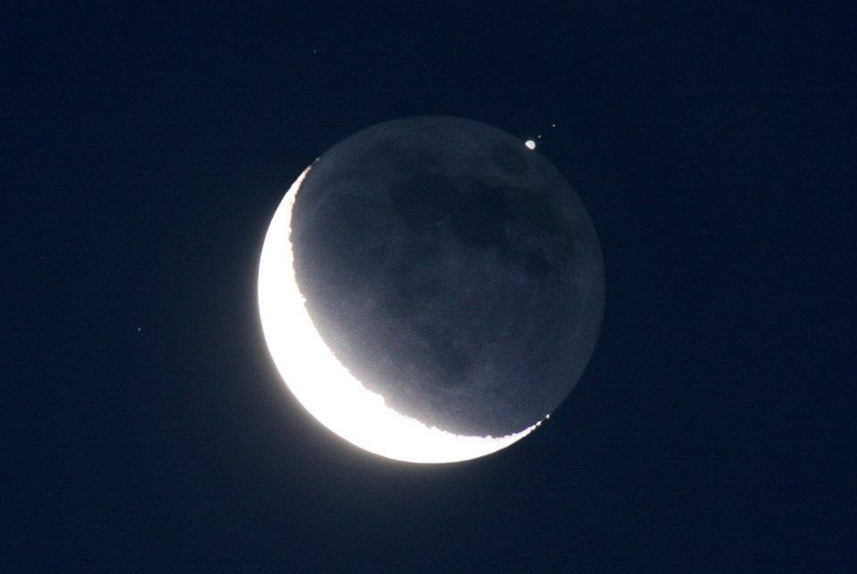

Покрытие звезды или планеты Луной
1. Как выглядит
Яркая звезда или планета медленно приближается к краю Луны с тёмной стороны. В момент касания свет вдруг исчезает — будто свечу задули. Через некоторое время (от нескольких минут до часа) звезда появляется с противоположного края Луны так же внезапно, как и пропала. Если покрывается яркая планета (например, Юпитер или Венера), видно, как её диск по частям скрывается за неровным лунным краем. Луна в это время может быть как узким серпом (тогда звезда скрывается за тёмную сторону), так и полной (тогда покрытие происходит с яркой стороны, заметить момент сложнее).
2. История обнаружения и наблюдений
Покрытия звёзд Луной замечали ещё древние греки. В 129 году до нашей эры Гиппарх сравнил свои наблюдения с записями более старых астрономов и заметил, что положения звёзд изменились — так он открыл явление прецессии (медленного смещения земной оси). В 1700-х годах английский астроном Джеймс Брадли использовал покрытия для уточнения лунной орбиты. В 1940-х и 1950-х годах советские астрономы под руководством Иосифа Шкловского по наблюдениям покрытий уточняли размеры звёзд. В 1970-х годах наблюдали покрытие звезды Сатурном — это помогло изучить его кольца. Сейчас космические аппараты используют покрытия звёзд для изучения атмосфер планет.
3. Природа явления
Луна движется по небу с запада на восток (в отличие от кажущегося суточного движения неба с востока на запад). Она проходит перед далёкими звёздами и планетами, временно закрывая их своим телом. Поскольку у Луны нет атмосферы, свет исчезает мгновенно — за сотые доли секунды. Это отличает покрытие от солнечного затмения, где свет Солнца постепенно убывает. Покрытия для каждой звезды происходят в определённой полосе на Земле — шириной около нескольких тысяч километров (для сравнения, ширина лунной тени при солнечном затмении — до 270 километров).
4. Связь с культурой и мифами
В древности покрытия звёзд Луной не особенно пугали — считали, что звезда просто «ушла отдыхать» или «спряталась от злых духов». Однако покрытия планет, особенно яркого Марса, могли истолковать как знак богов о грядущей войне. В Индии покрытие Луной царской планеты (Юпитера) считали неблагоприятным знаком для правителя. Астрологи до сих пор придают значение покрытиям натальных планет в гороскопе, хотя наука этого не подтверждает.
5. Условия для наблюдения
Покрытие видно только из довольно узкой полосы на поверхности Земли (до 3000 километров). Наблюдателю нужно находиться точно в этой полосе, иначе звезда пройдёт мимо края Луны. Луна должна быть в фазе от тонкого серпа до неполной — тогда тёмная сторона хорошо видна, и момент исчезновения яркий и неожиданный. В полнолуние покрытия видеть сложно из-за яркого света. Погода должна быть ясной. Для наблюдения достаточно бинокля или небольшого телескопа, но самые точные моменты исчезновения измеряют с секундомером. Звезды до третьей величины видны даже в бинокль. Луна не закрывает звёзды хаотично — покрытия происходят, когда Луна находится недалеко от эклиптики (видимого пути планет и Солнца), поэтому покрываются только зодиакальные звёзды и планеты.
6. Редкость и периодичность
Покрытия звёзд Луной случаются очень часто — каждую ночь Луна закрывает какую-нибудь слабую звезду, невидимую глазом. Покрытия ярких звёзд (ярче третьей величины) — редкие события: в конкретном месте Земли их бывает несколько раз в год. Покрытия планет случаются ещё реже: Венера закрывается Луной раз в несколько лет на всей Земле, а в одном месте — раз в 10–30 лет. Юпитер и Сатурн — раз в 10–20 лет. Меркурий — чаще, так как он близок к Солнцу и Луне. В 2023 году произошло покрытие Венеры Луной (видимое в Азии и Африке). В 2024 году покрытие Сатурна Луной видели в Южной Америке и Африке. Прогнозы покрытий публикуются в астрономических календарях за год вперёд. Самое зрелищное — покрытие яркой планеты тонким лунным серпом на тёмном небе. Некоторые астрономы-любители специально путешествуют по миру, чтобы увидеть такие события.
